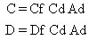
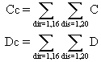

7.0 DISPERSE REGIONAL IMPACT
For some applications, the source of the contaminant emissions may be many
release points spread over the region. The emissions from home heating
furnaces are an example of such a source. A detailed evaluation of the
thousands of release points is, at best, a difficult task.
A component was developed for consideration of cases with a disperse regional
source term. This component operates in a three-step process. First, the
concentration and deposition patterns for a single typical release point
are defined. Second, scaled patterns from the first step are superimposed
to define the maximum cumulative impact of sources over the region on a
typical single receptor located in the center of the region. Third, the
air-as-source option described above is used to evaluate impacts over the
region.

(77)
This analysis requires definition of the density and intensity of sources
in annular segments as a function of distance and direction from the facility.
The component allows use of a correlation with population to define the
density of sources. The single typical release computation results define
air and surface concentrations as a function of distance and direction.
These concentrations can be used to compute approximate downwind concentrations
from multiple sources within an area using
where
C = air concentration (g/m3)
D = surface deposition (g/m2)
Cf = air concentration for unit source (g/m3)
Df = surface concentration for unit source (g/m2)
Cd = density of unit sources in area (number/m2)
Ad = area (m2).
This formulation assumes the sources all have the same, or nearly the same,
release characteristics as the typical unit release. Then by adding the
contributions from each of the annular segment areas surrounding the central
receptor point, the cumulative exposure of the disperse sources is computed:

(78)
where
Cc = cumulative air concentration (g/m3)
Dc = cumulative soil deposition (g/m2)
dis = distance from the center of the area (m)
dir = direction from the center of the area (m).
Then Cc and Dc are
used as air-as-source inputs to evaluate impacts over the region.
The disperse
regional source term provides a convenient method of handling cases with
numerous release points over the region. Although the approach of using
densities of release points greatly simplifies the data requirements, it
also limits the resolution of applications. This approach will work best
for many similar sources spread relatively uniformly over the region in
question. The approach should not be used for cases with either a limited
number of sources or a non-uniform regional distribution of sources. The
key to deciding if an application is appropriate is to decide if the sources
are numerous and disperse enough that a uniform concentration pattern can
be used to evaluate exposures. The disperse regional source-term component
has not been incorporated into the MEPAS user interface and currently is
run only for special applications.